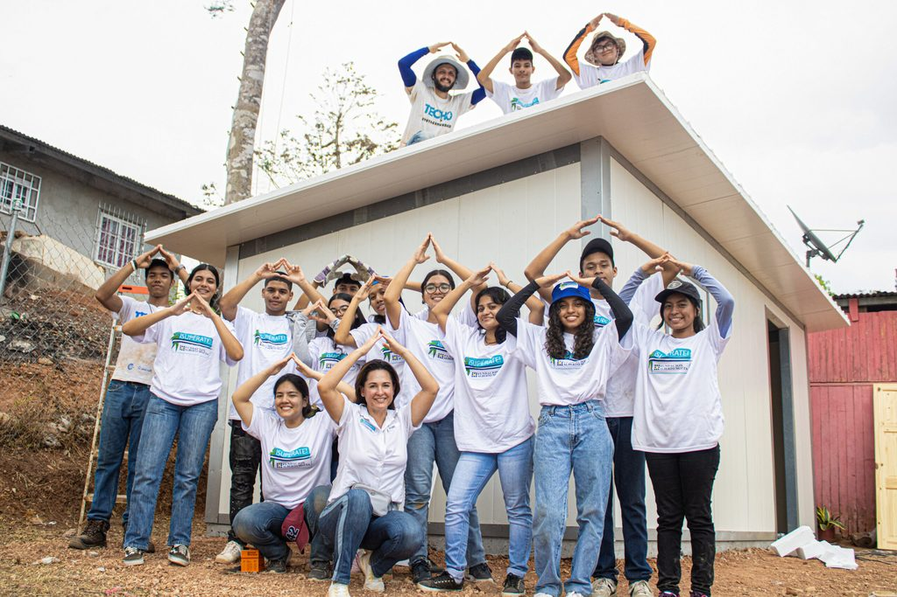
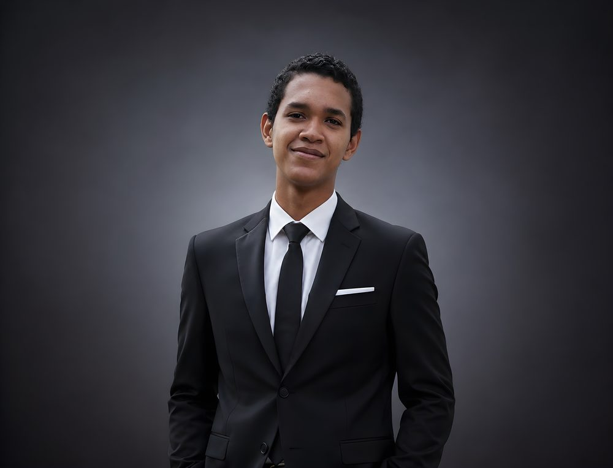
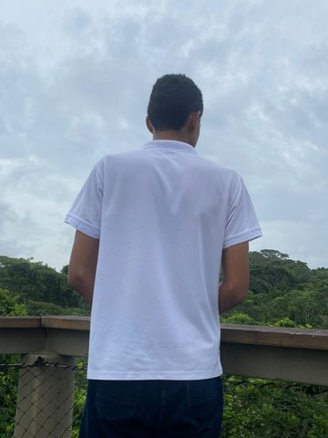
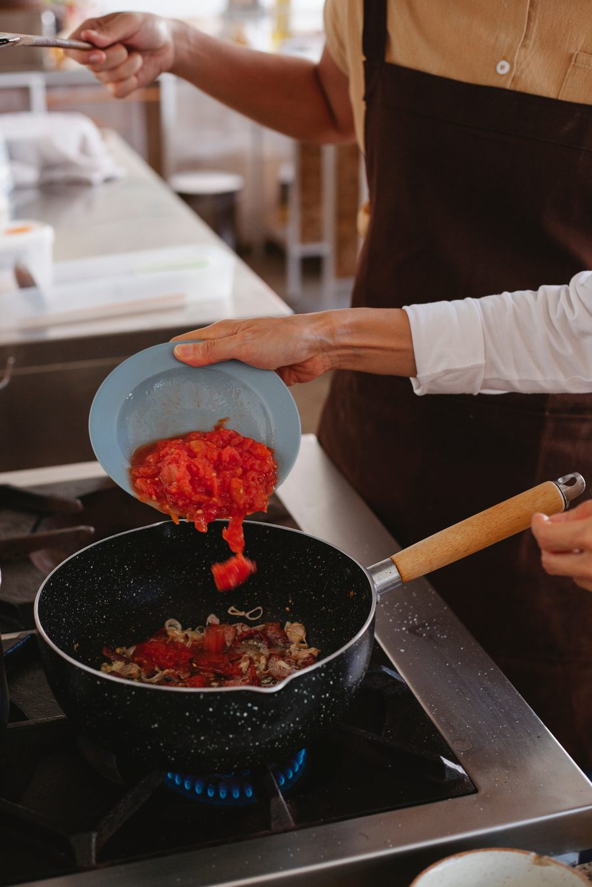
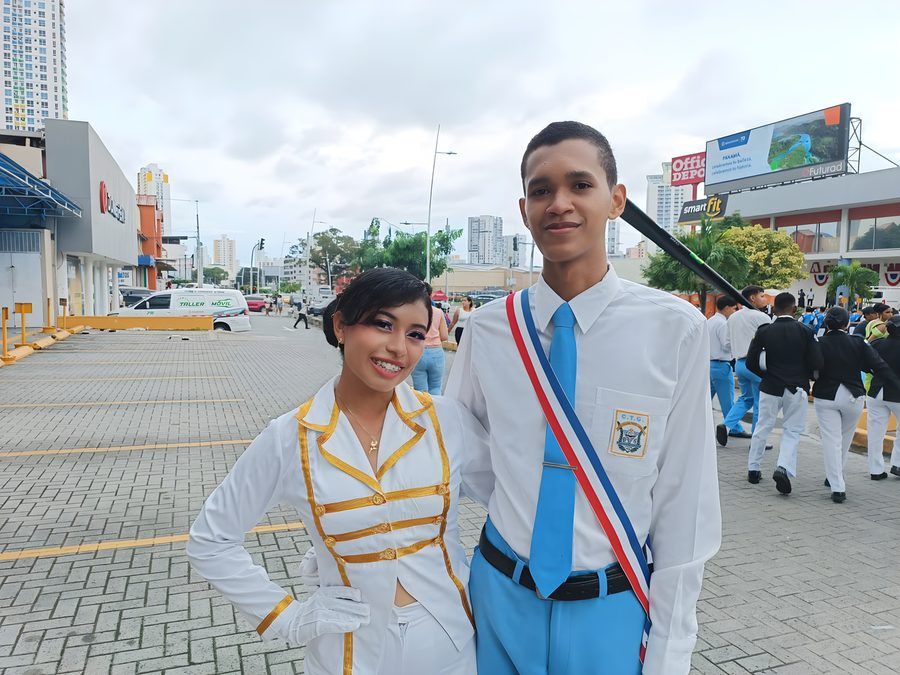
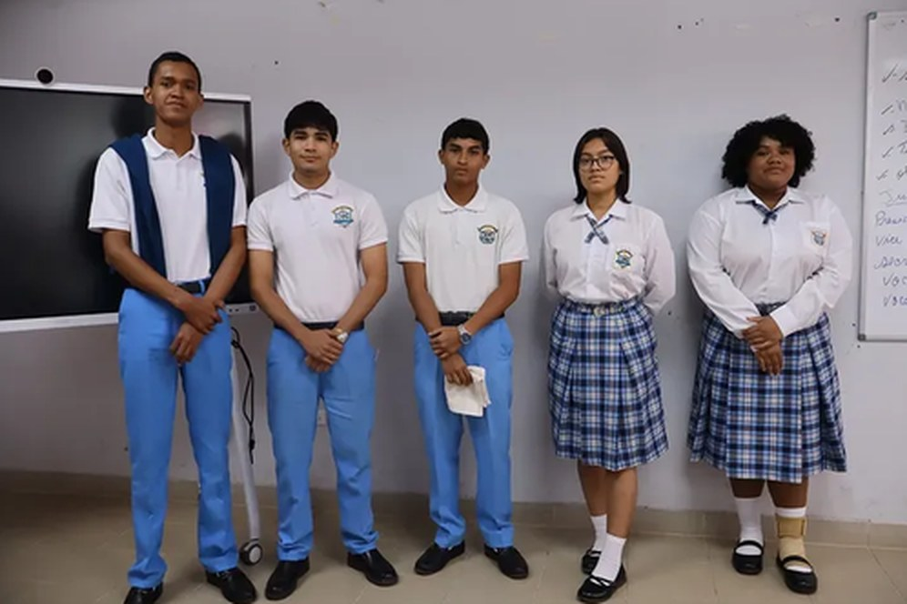
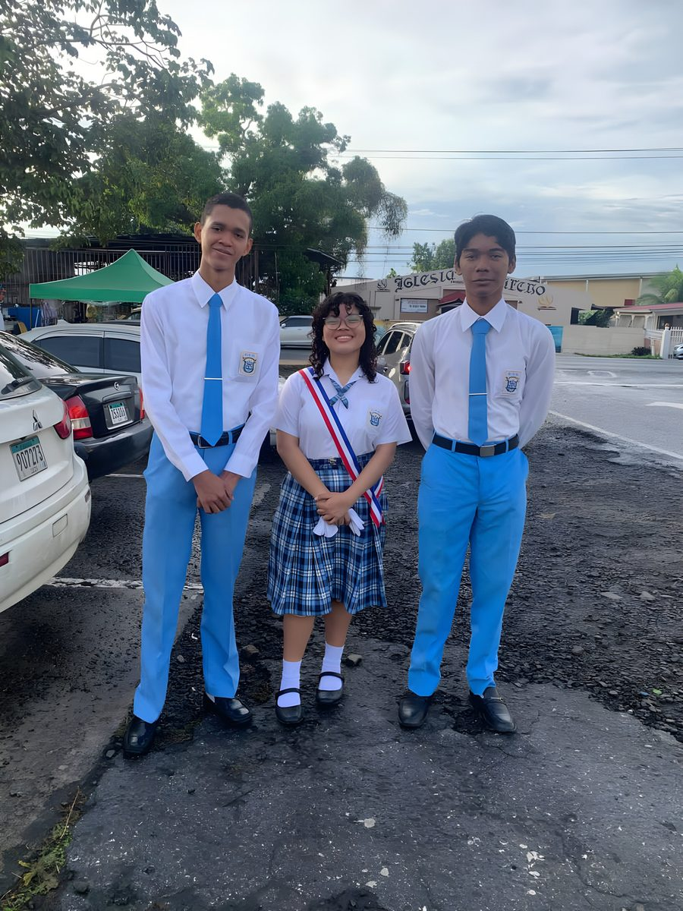
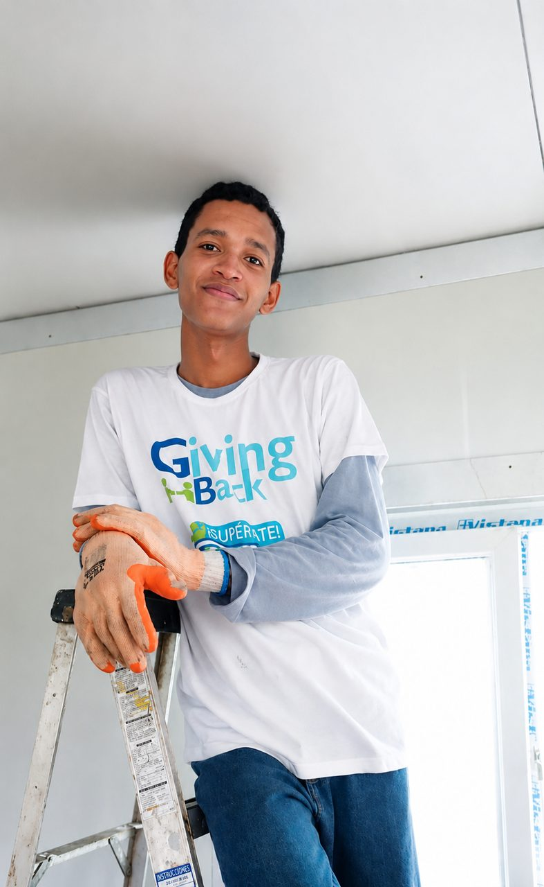
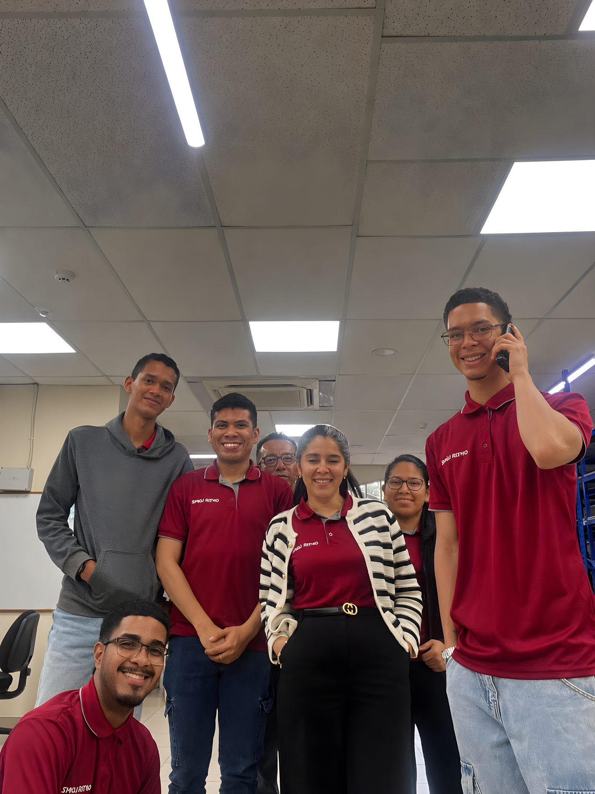

TECHO Panama
I volunteered with TECHO Panamá, helping build homes for families in need. This experience strengthened my teamwork skills and reinforced the importance of supporting my community.
“Never let your fears stop you from being happy, because every fear you face and overcome brings you closer to the best version of yourself.”


About me
I’m a responsible, organized, and ambitious person who enjoys learning new things and is determined to achieve his goals. I believe in the importance of respect, honesty, and perseverance. I’m always looking for opportunities to grow, improve my skills, and turn my ideas into meaningful projects. I face every challenge with a positive attitude and the desire to become a better version of myself.

I enjoy prepare different meals and trying new recipes, especially when I can share them with my family and friends.
Cooking also teaches me patience, organization, and attention to detail, which are qualities that help me in many areas of my life.
I am a proactive, and adaptable candidate with strong leadership, analytical thinking, and organizational skills. Committed to delivering high-quality results.



My academic path has been shaped by perseverance, leadership, and the pursuit of opportunities that foster personal and professional development.


I completed an internship at Óptica López as an Administrative Assistant, where I strengthened my organizational and customer service skills.
Administrative Assistant · Óptica López Internship